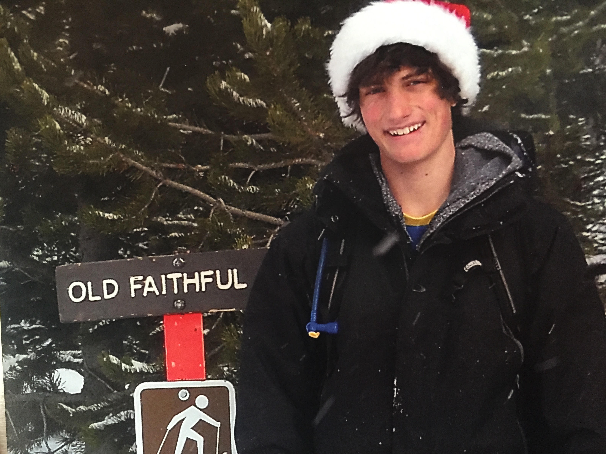

Zachary BastianiI am a Ph.D. student with in the Scientific Computing and Imaging Institute at the University of Utah. I am being coadvised by Mike Kirby and Shandian Zhe. My research focuses on deep learning approaches to symbolic regression. During 2022 and 2023, I worked within the medical industry, trying to improve and implement machine-learning techniques to enhance the care of patients. With Strive Health, I implemented a new state-of-the-art model to improve the prediction accuracy of Chronic Kidney Disease patients. At BioMérieux, I focused on integrating deep learning into R&I's workflow to enhance development and system support.
Warnock Engineering Building, Office 3783 |
 |
TimelineAugust 2023 - Present: PhD student at the University of Utah within the Scientific Computing and Imaging Institute. October 2022 - August 2023: Software engineer in the Research and Inovation team at BioMérieux. March 2022 - Jun 2022: Data Scientist intern at Strive Health to improve kidney care. June 2021 - December 2021: Undergraduate Researcher in Ross Whitaker's Lab. August 2016 - December 2021: Double major in Computer Science and Mathematics at the University of Utah. |
ResearchMy research interests are bound between theoretical mathematics and machine learning. My current research focuses on symbolic regression to improve the visibility and interpretability of models. |

|
Semiblind Calibration of Gain and Drift in a Sensor Network Using Gaussian ProcessesZachary Bastiani, Ross Whitaker Undergraduate Thesis, University of Utah, 2021 paper / code In this thesis, we assume that gain is constant throughout the sensor network and that each sensor has its own drift that is changing in time. Furthermore, we used a second Gaussian process to model the drift for our sensor network. We evaluated the effectiveness of three different optimization strategies’ ability to retrieve the underly- ing data from a synthetic data set. The first optimization strategy calculates gain and drift using a alternating fixed-point algorithm. The second optimization strategy uses an optimizer to find the gain while drift is changed to be dependent upon gain. Lastly, we progressed the second optimization strategy by also having the optimizer find the bandwidths of our kernel function, the third optimization strategy. |
|
Adapted from Dharmesh Tailor's fork of Leonid Keselman's website. |